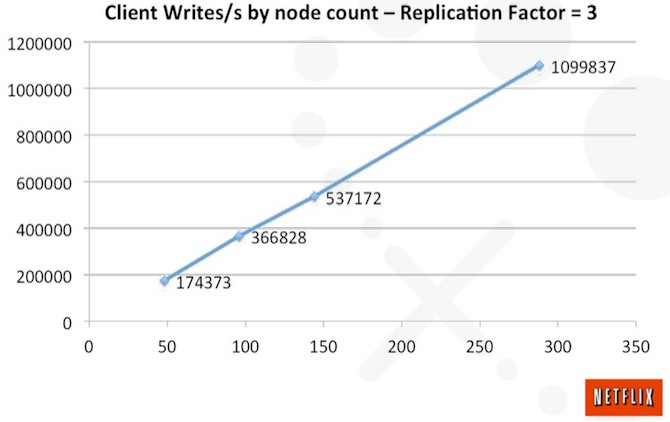
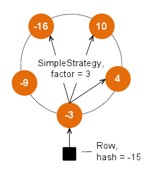

<epam>
presents
●
The Tale of
Cassandra
~
Directed by
Attila Szűcs
(attila_szucs@epam.com)
<epam>
presents
Directed by
Attila Szűcs
(attila_szucs@epam.com)
NoSQL database ... with SQL interface
High performance
Linear scalability
Ask questions: http://sli.do/cassandra
Vote for questions
Questions will be answered after each chapter

Consistency is overrated
Examples:

set ColumnFamily['rowkey']['column'] = 'value';
get ColumnFamily['rowkey'];
get ColumnFamily['rowkey']['column'];
list ColumnFamily;
del ColumnFamily['rowkey'];
del ColumnFamily['rowkey']['column'];
Every node is master => No single point of failure
Dynamic cluster formation and client connections

The nodes are in constant communication...
It is enough to know a few nodes, you will hear everything...
Replication factor: the number of copies for each row
Replication strategy:

Waiting for acknowledgement from how many rows


Data is written to the commit log first
After recovering from a failure, commit logs are replayed
Write performance - no read is needed
Read performance is also good - bloom filters
SQL interface on the top of Cassandra data structure.
Being schema-free is nice, but it pushes schema definition to the business layer.
-
Schema is only metadata: ALTER TABLE is quick, null values are not stored.
-
Support for dynamic data through collections.
Primary keys are mandatory, they identify rows
INSERT and UPDATE are equivalent
-- UserId is primary key
INSERT INTO User
(UserId, FirstName, LastName)
VALUES
(1, 'Ada', 'Lovelace');
UPDATE User SET
FirstName = 'Ada',
LastName = 'Lovelace'
WHERE
UserId = 1;
INSERT INTO Users
(UserName, PasswordHash, FirstName, LastName)
VALUES
('Ada', '###', 'Ada', 'Lovelace')
IF NOT EXISTS;
UPDATE Users
SET PasswordHash = 'newhash'
WHERE UserName = 'Ada'
IF PasswordHash = 'oldhash';
CREATE TABLE track (
track_id int,
title text,
album text,
artist text,
PRIMARY KEY(album, track_id)
);
CREATE INDEX tracks_by_artist ON track(artist);
SELECT * FROM track WHERE album = 'Joshua Tree';
SELECT * FROM track WHERE artist = 'U2';
Performance?
Not as bad as it sounds. Measure!
Fast if data is previously filtered by key
CREATE TABLE track (
track_id int,
title text,
album text,
artist text,
PRIMARY KEY(album, track_id)
);
CREATE INDEX tracks_by_artist ON track(artist);
SELECT * FROM track
WHERE album = 'Joshua Tree'
AND artist = 'U2';
CREATE TABLE tracks_by_album (
id int,
title text,
album text,
artist text,
PRIMARY KEY(album, id)
);
CREATE TABLE tracks_by_artist (
id int,
title text,
album text,
artist text,
PRIMARY KEY(artist, id)
);
CREATE TABLE Bill_Static
(
BillId int,
Seller text static,
Buyer text static,
ItemId int,
ItemName text,
ItemPrice decimal,
PRIMARY KEY (BillId, ItemId)
);
CREATE TABLE Bill_Collection
(
BillId int,
Seller text,
Buyer text,
ItemNames list<text>,
ItemPrices list<decimal>,
PRIMARY KEY (BillId)
);
CREATE TYPE Item
(
ItemName text,
ItemPrice decimal
);
CREATE TABLE Bill_Type
(
BillId int,
Seller text,
Buyer text,
Items list<Item>
PRIMARY KEY (BillId)
);
(... and thanks for your attention)
Presentation written in reveal.js by manually editing the HTML file (press view source).